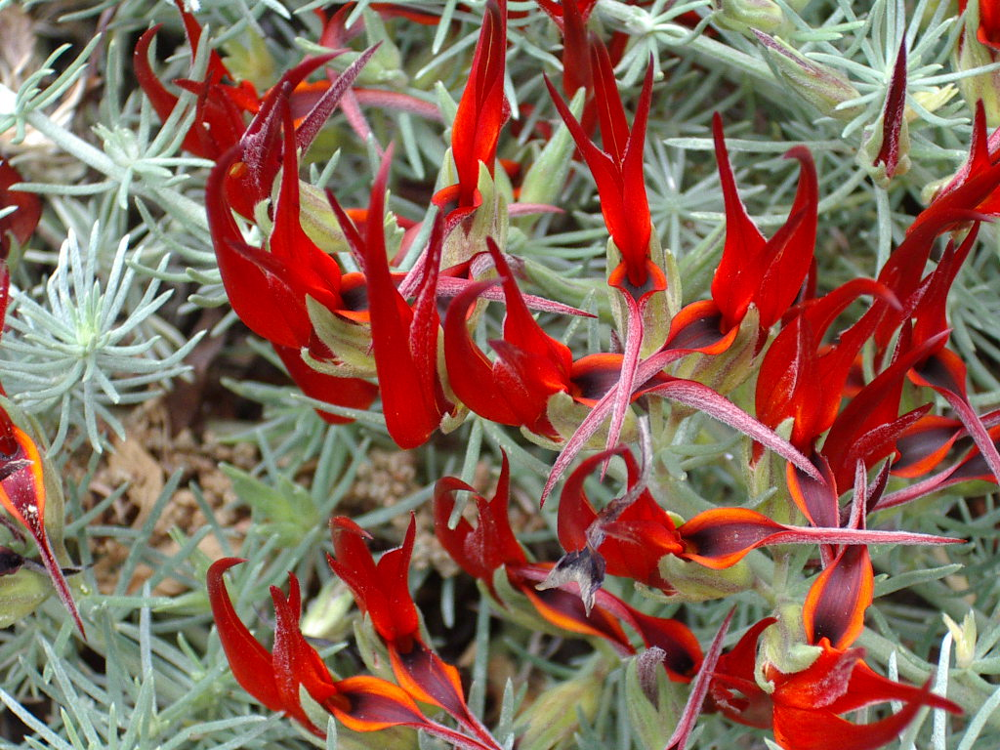

Lotus Bertheloti

Lotus berthelotii is a flowering plant endemic to the Canary Islands of Spain, in the genus Lotus of the pea family Fabaceae. Among its common names are lotus vine flower, parrot (or parrot's) beak, pelican beak, and coral gem. This plant is widely cultivated but is either extinct in the wild or persists as a few individuals. In 1884 it was already classed as "exceedingly rare" and plant collection probably hastened its decline.
The flowers of Lotus berthelotii and some other Canary Island species appear to be adapted for bird pollination. It was once thought that the original pollinators of these plants (and other genera such as Isoplexis and Canarina) were sunbirds which had become extinct on the Canary Islands, explaining why they are rare and considered endangered species (Vogel 1954; Vogel et al. 1984; Valido et al. 2004). However more recent work has shown that these plants are adequately pollinated by non-specialist flower visiting birds, particularly the Canary Islands chiffchaff (Phylloscopus canariensis), and in fact show some specific adaptations to infrequent pollination by these birds, such as extended flower lifespans.[2]
However, the cultivated population studied by Ollerton et al. (2008) set no fruit, despite the plants receiving large amounts of pollen on their stigmas. This may be because the population was a single, self incompatible clonal genotype; whether this is true of all plants in cultivation is unknown, but may have important implications for the conservation of this species if it is extinct in the wild.